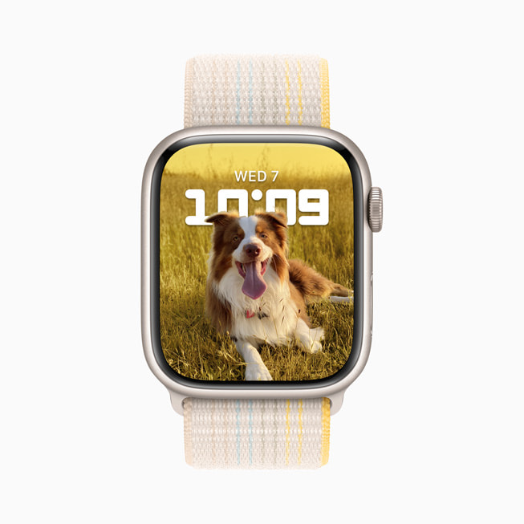

历史宣传图展示小狗照片的景深效果。固件保留此包；当前图库可选性仍取决于机型与系统。
下方的文件数包括本地化资源。固件名称键能确认包的归属；组件的圆屏点击边界、亮屏过渡与 AOD 对照均待设备验证。
原始包 已解析属性表 Mach-O 方法与成员 ARM64 汇编 解出的纹理和场景
.strings × 44 .heic × 34 .plist × 18 .png × 17 无扩展名 × 1
原始包 已解析属性表 Mach-O 方法与成员 ARM64 汇编 解出的纹理和场景
.strings × 44 .heic × 34 .plist × 18 .png × 17 无扩展名 × 1
原始包 已解析属性表 Mach-O 方法与成员 ARM64 汇编 解出的纹理和场景
.strings × 44 .heic × 34 .plist × 18 .png × 17 无扩展名 × 1
NTKUltraCubeFaceBundle.bundleFACE_STYLE_ULTRACUBE_FACE_DESCRIPTIONEDIT_OPTION_LABEL_TYPEFACE_SAN_FRANCISCOEDIT_OPTION_LABEL_EFFECT_NONEEDIT_OPTION_LABEL_EFFECT_DUOTONEEDIT_MODE_LABEL_TYPEFACEEDIT_OPTION_LABEL_EFFECT_BACKGROUNDEDIT_OPTION_LABEL_TYPEFACE_TOKYOEDIT_OPTION_LABEL_TYPEFACE_NEW_YORK色组与设备条件 共享色组与默认值
-[NTKUltraCubeContentView backgroundImageTritiumBrightness];-[NTKUltraCubeContentView foregroundImageTritiumBrightness];-[NTKUltraCubeContentView setBackgroundImageTritiumBrightness:];-[NTKUltraCubeContentView setForegroundImageTritiumBrightness:];-[NTKUltraCubeFaceView tritium_didTransitionToTritiumOn];-[NTKUltraCubeFaceView tritium_prepareForTransitionToTritiumOnAnimated:withCompletion:];-[NTKUltraCubeFaceView tritium_didTransitionToTritiumOff];-[NTKUltraCubeFaceView tritium_createFaceAnimator];-[NTKUltraCubeFaceView tritium_transitionToFrameSpecifier:];-[NTKUltraCubeFaceView tritium_timeViews];-[NTKUltraCubeFaceView tritium_willTransitionToTritiumOffFromFrameSpecifier:];-[NTKUltraCubeFaceView tritium_cleanupTransitionView];-[NTKUltraCubeFaceView tritium_faceAnimatorProgress:monotonicProgress:];-[NTKUltraCubeContentView setOverrideDate:duration:];-[NTKUltraCubeContentView applyColorTransitionFraction:fromPalette:toPalette:];-[NTKUltraCubeFaceView tritium_didTransitionToTritiumOn];-[NTKUltraCubeFaceView tritium_prepareForTransitionToTritiumOnAnimated:withCompletion:];-[NTKUltraCubeFaceView tritium_didTransitionToTritiumOff];-[NTKUltraCubeFaceView _applyTransitionFraction:fromOption:toOption:forCustomEditMode:slot:];-[NTKUltraCubeFaceView _homeScreenAppearanceTransitionDidEndAtLocation:];-[NTKUltraCubeFaceView tritium_createFaceAnimator];-[NTKUltraCubeFaceView tritium_transitionToFrameSpecifier:];-[NTKUltraCubeFaceView _homeScreenAppearanceTransitionWillStartTowardsLocation:];-[NTKUltraCubeFaceView _configureForTransitionFraction:fromEditMode:toEditMode:];-[NTKUltraCubeFaceView setOverrideDate:duration:];-[NTKUltraCubeFaceView _applyHomeScreenAppearanceTransitionProgress:];-[NTKUltraCubeFaceView screenDidTurnOffAnimated:];-[NTKUltraCubeFaceView tritium_willTransitionToTritiumOffFromFrameSpecifier:];-[NTKUltraCubeFaceView _animationCrownRestoreFinished:];-[NTKUltraCubeFaceView _animationToNextFinished:];-[NTKUltraCubeFaceView _applyColorTransitionFraction:fromPalette:toPalette:];-[NTKUltraCubeFaceView _loadNextPhotoAnimated:];-[NTKUltraCubeFaceView _loadPhoto:animated:];-[NTKUltraCubeFaceView _startAnimationToNext:];-[NTKUltraCubeFaceView _stopAnimationToNext];-[NTKUltraCubeFaceView _tryLoadPhoto:animated:];-[NTKUltraCubeFaceView tritium_cleanupTransitionView];-[NTKUltraCubeFaceView tritium_faceAnimatorProgress:monotonicProgress:];+[NTKUltraCubeColorEffectEditOption _snapshotKeyForValue:forDevice:];+[NTKUltraCubeColorEffectEditOption optionWithColorEffect:forDevice:];+[NTKUltraCubeColorEffectEditOption _orderedValuesForDevice:];-[NTKUltraCubeColorEffectEditOption localizedName];-[NTKUltraCubeColorEffectEditOption _valueToFaceBundleStringDict];-[NTKUltraCubeColorEffectEditOption colorEffect];+[NTKUltraCubeContentEffect contentEffectWithColorEffect:colorPalette:];-[NTKUltraCubeContentEffect setPalette:];-[NTKUltraCubeContentEffect colorEffect];-[NTKUltraCubeContentEffect palette];-[NTKUltraCubeContentEffect setColorEffect:];-[NTKUltraCubeContentView layoutSubviews];-[NTKUltraCubeContentView _applyBackgroundColorRampFromPalette:toPalette:fraction:];-[NTKUltraCubeContentView _applyColorRampTo:colorMatrix:fromPalette:toPalette:fraction:];-[NTKUltraCubeContentView _applyForegroundColorRampFromPalette:toPalette:fraction:];-[NTKUltraCubeContentView applyColorTransitionFraction:fromPalette:toPalette:];-[NTKUltraCubeContentView timeElementShadowColor];-[NTKUltraCubeContentView updateForegroundImage:backgroundImage:timeElementShadowColor:topGradientView:bottomGradientView:isTimeElementFront:];+[NTKUltraCubeFace _dateComplicationSlotForDevice:];+[NTKUltraCubeFace _complicationSlotDescriptors];+[NTKUltraCubeFace _dateComplicationSlotSupportedStylesForDevice:];+[NTKUltraCubeFace _orderedComplicationSlots];+[NTKUltraCubeFace _defaultSelectedComplicationSlotForDevice:];+[NTKUltraCubeFace isColorEffectFeatureEnabledForDevice:];-[NTKUltraCubeFace _colorEffectsSupportedForEditMode:];-[NTKUltraCubeFace _localizedNameForComplicationSlot:];-[NTKUltraCubeFace _numberOfOptionsForCustomEditMode:slot:];-[NTKUltraCubeFace _defaultOptionForCustomEditMode:slot:];-[NTKUltraCubeFace _indexOfOption:forCustomEditMode:slot:];-[NTKUltraCubeFace shouldColorEditModeBeAtTop];-[NTKUltraCubeFace _optionAtIndex:forCustomEditMode:slot:];-[NTKUltraCubeFaceView _keylineCornerRadiusForComplicationSlot:];-[NTKUltraCubeFaceView createFaceColorPalette];-[NTKUltraCubeFaceView _detachedComplicationDisplays];-[NTKUltraCubeFaceView _legacyLayoutOverrideforComplicationType:slot:];-[NTKUltraCubeFaceView _applyTransitionFraction:fromOption:toOption:forCustomEditMode:slot:];-[NTKUltraCubeFaceView dateComplicationFont];-[NTKUltraCubeFaceView _applyOption:forCustomEditMode:slot:];-[NTKUltraCubeFaceView _prepareForEditing];-[NTKUltraCubeFaceView _cleanupAfterEditing];-[NTKUltraCubeFaceView _fadesComplicationSlot:inEditMode:];-[NTKUltraCubeFaceView colorEffect];-[NTKUltraCubeFaceView _configureComplicationView:forSlot:];-[NTKUltraCubeFaceView colorPalette];-[NTKUltraCubeFaceView _loadLayoutRules];-[NTKUltraCubeFaceView _minimumBreathingScaleForComplicationSlot:];-[NTKUltraCubeFaceView _newLegacyViewForComplication:family:slot:];-[NTKUltraCubeFaceView keylineStyleForComplicationSlot:];-[NTKUltraCubeFaceView _complicationPickerStyleForSlot:];-[NTKUltraCubeFaceView _applyColorEffect];-[NTKUltraCubeFaceView _applyColorTransitionFraction:fromPalette:toPalette:];-[NTKUltraCubeFaceView _hideDateComplication];-[NTKUltraCubeFaceView _newGradientViewsWithColor:timeElementUnitBaseline:topGradientView:bottomGradientView:];-[NTKUltraCubeFaceView _showDateComplication];-[NTKUltraCubeFaceView _snapshotDateComplicationLabel];-[NTKUltraCubeFaceView dateComplicationFrameForUnitBaseline:];-[NTKUltraCubeImageContainerView setContentBackgroundColor:];-[NTKUltraCubeImageContainerView removeColorRamp];-[NTKUltraCubeImageContainerView applyColorRamp:colorRampAmount:monochromeColorMatrix:];-[_NTKUltraCubePhotoFaceUpgradeContext colorEffect];-[_NTKUltraCubePhotoFaceUpgradeContext colorOption];-[_NTKUltraCubePhotoFaceUpgradeContext topComplication];-[_NTKUltraCubePhotoFaceUpgradeContext bottomComplication];-[_NTKUltraCubePhotoFaceUpgradeContext initWithReader:topComplication:bottomComplication:colorEffectOption:colorOption:typefaceOption:];